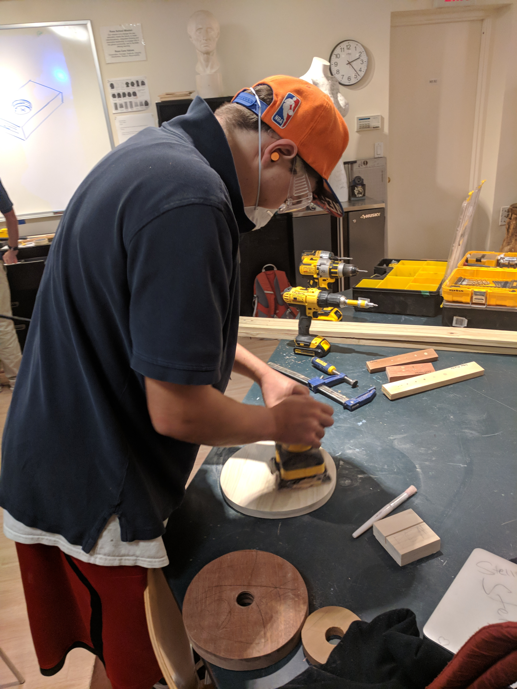
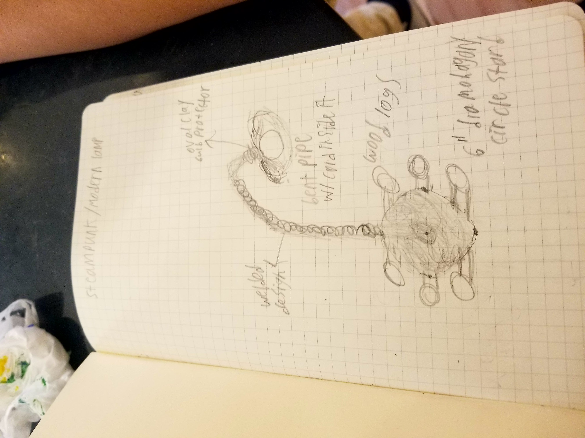
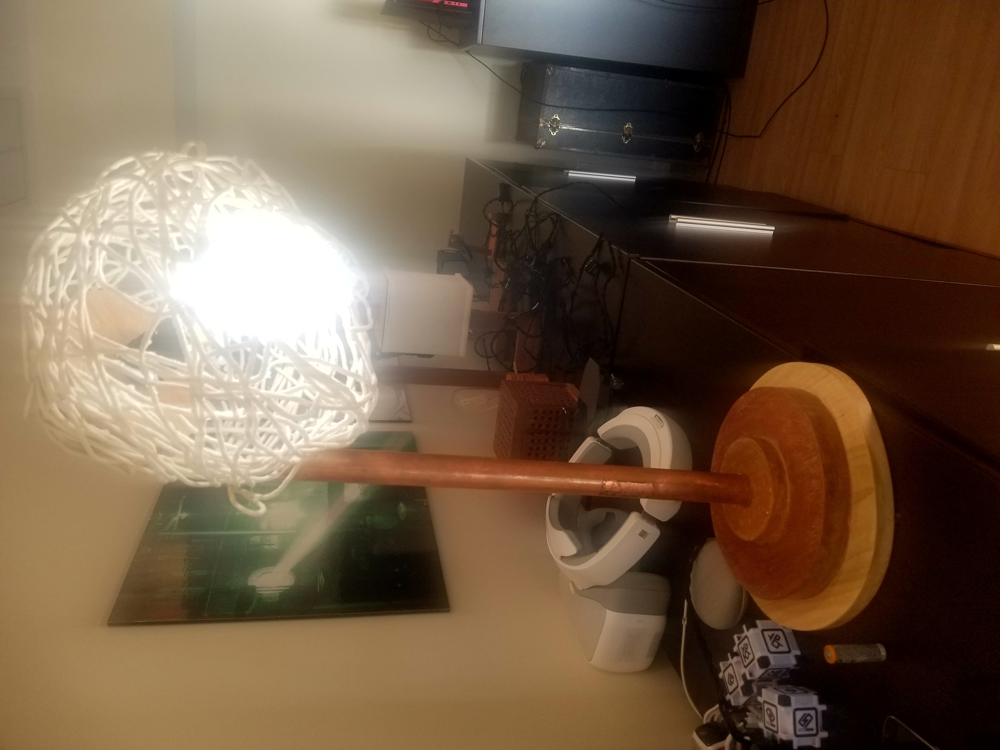
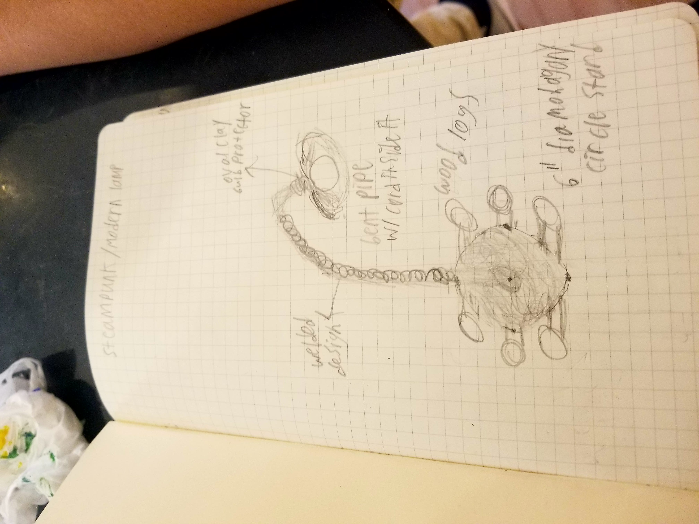
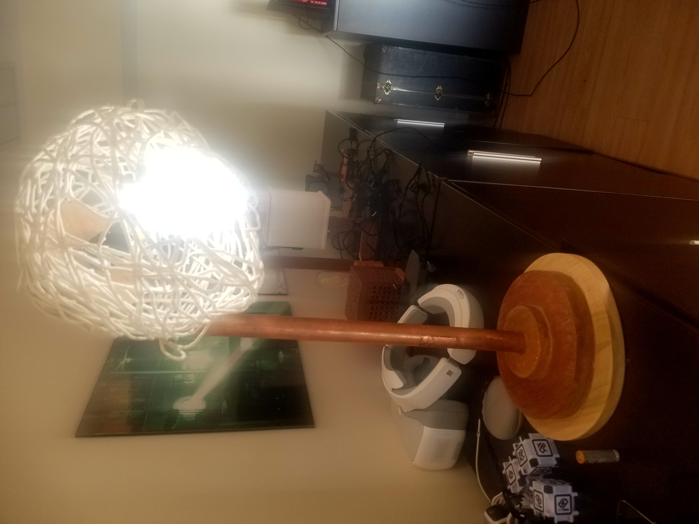

Desk Lamp Project
Posted on November 17th, 2017: 1:00PM

 



For ilab this trimester, our group assignment was to work with Mr. Mulhern to make a handmade lamp. For my desk lamp I chose to use all three wood, metal, and clay components. This is what makes my lamp unique. My lamp base is composed of three circles of wood stacked on top of each other. I used every type of wood available to me, so I have a nice mix of colors on the lamp. I used a 10” circle of poplar, an 8” circle of mahogany, and a 4” circle of cedar. The circle stack has a 1” diameter hole drilled in the center of it. I will put a bent metal rod in the center and attach a clay lamp shade to the top of it and solder the wiring together to finish my lamp. For the light, I chose to use an led, because it is brighter, and more environmentally friendly than other choices, and less dangerous than a fire lamp. To gain inspiration for this design, I looked at handmade table lamps on google images.
So far, I have successfully completed the base. The base was the hardest part of the project, due to the amount of time and equipment it required to complete it. I started learning how to use table saws, band saws, and chop saws, soldering irons, and other basic shop tools. I learned the basic rules and safety guidelines for shop-working at Ross. Then I drew a scaled plan of my modern arc styled lamp. To make the base I drew the circles on wood with pencil and pizza-cutted them with a band saw. Then sanded down the edges with a belt sander. I used sandpaper to smooth and touch up the wood. When they were nice and smooth, I pre-drilled 4 holes in each circle. I attached the little circle to the medium circle and then the medium to the largest one. To finish, I applied finishing wax, and buffed to a glossy shine!
The two major challenges I faced were working with cedar and hiding my screws. Cedar is one of the softest, weakest types of wood, even though it has a pleasant smell and nice aesthetics to it. It was very hard to sand it without scratching the surface, and I had to go with the grain perfectly and not press to hard. While doing this, the cedar chipped, but luckily it was a quick and easy fix with some simple wood glue and tape to hold it while the glue dried. When working with wood, it is important to not show screws if it is not for construction purposes. This is why most furniture makers hide the crews and shine their wood. To hide the screws, I put them on the bottom of the base. To take things even a step further, I filled them in with wood glue and ⅜” pine dowel.